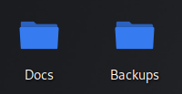
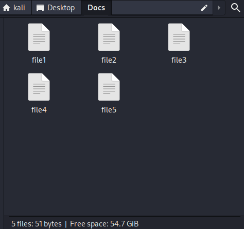
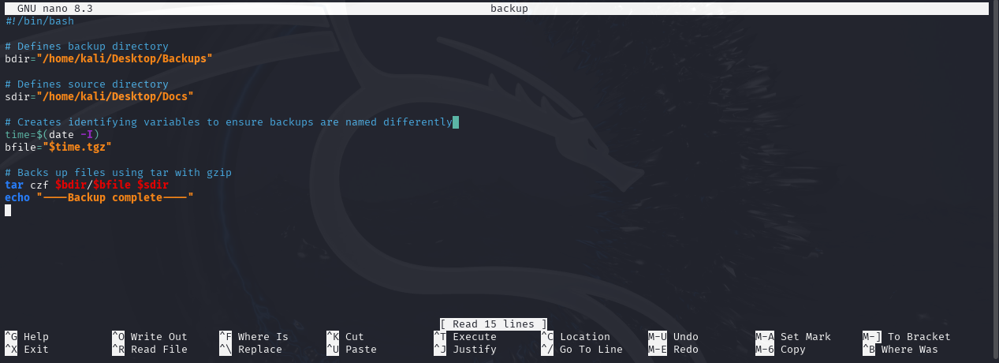
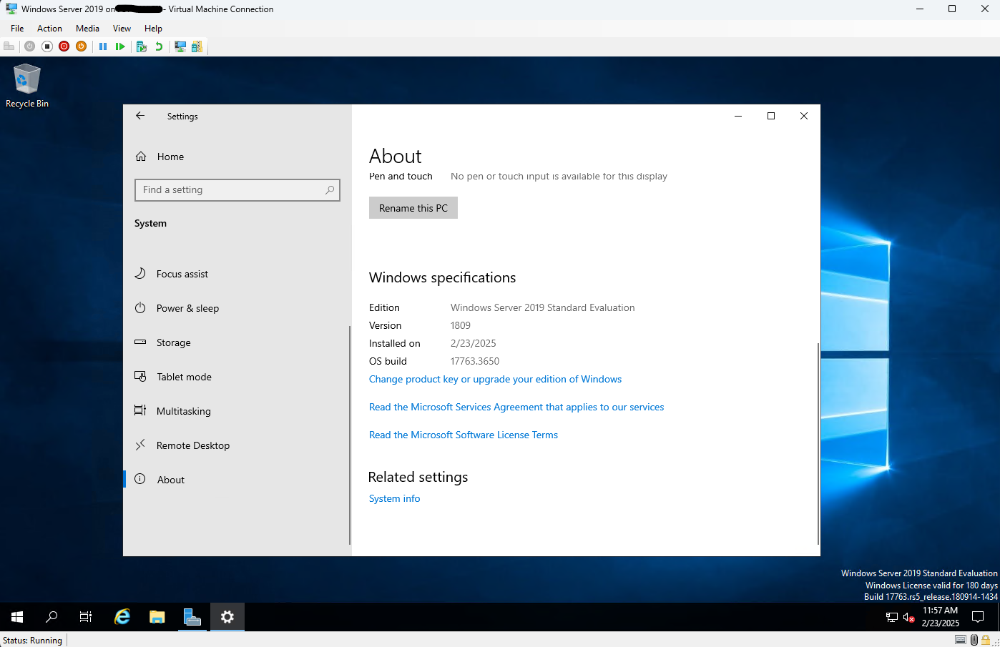
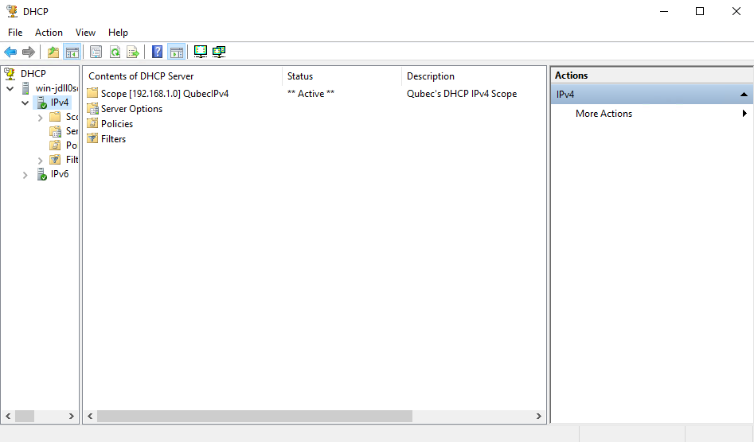
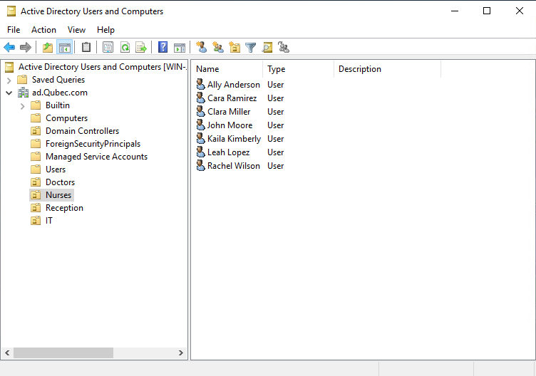
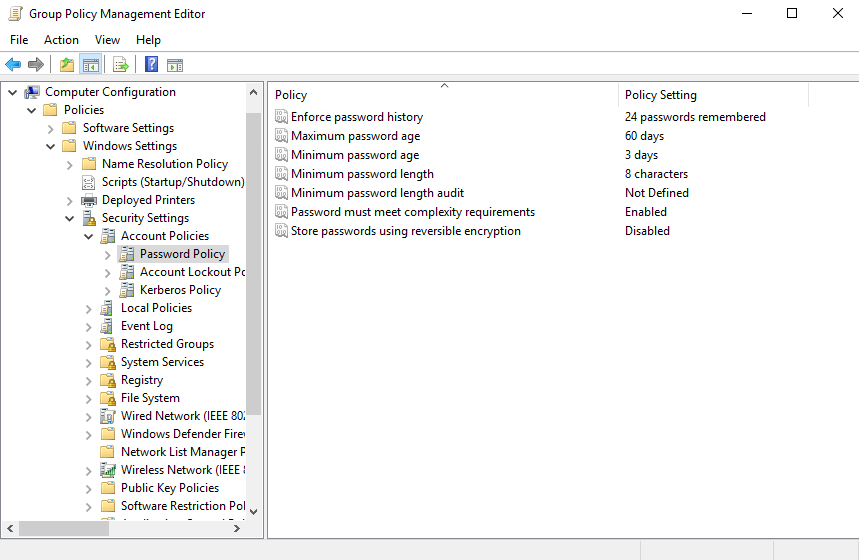

My Projects
Welcome. Most titles are links to the correct GitHub repository. I will be doing more projects in the future.
📌 Quick Links
Below are links to certain skills:
📂 Battleship:
This is my first Python project. I used a combination of functions and loops to create the
tabletop game of battleship.
📂 Rivendale:
This project focused on using the A-star algorithm to find a route from a specified point A and
point B. The returned array gives you which buildings you start at, which buildings you pass, and your
final destination.
📂 Password Generator:
This simple project uses the Python Random Module and a simple algorithm to create a string of random
characters, numbers, and symbols to make a password.
📂 Mock MSP Website:
This is my first "complex" fake website. It was my first time mixing JavaScript into the HTML and CSS.
I did want to make a backend database for PHP to connect to but decided against it. This website isn't responsive.
📂 Portfolio Website:
The website you are currently on is this project. It was made for people to view my information easier. This website
is my best attempt so far on responsiveness.
🔧 Cron Job:
Using a Kali VM hosted through HyperV, I created a cron job that automates a backup of files. To do this, I first created two folders, one for
the documents to be backup and the other for the destination folder.

Second, I created random files with random content.

Third, I created a script that creates the backup of the files and directory to then compress it using tar and gzip. I made sure that the generated files would be unique
using the date command.

Fourth, I created the cron job by opening the cron configuration file. It is currently set to backup those folders the 1st of every month.
Last, I tested my script to make sure the cron job will run. And it worked!

💻 Installing and Using Active Directory
I completed the following project for my final capstone project through WGU.
Active Directory first required I install Windows Server 2019. I downloaded the required ISO file on Microsoft's website and integrated this installation through Hyper-V. The
image below shows proof of installation.

While I didn't have an actual network for DHCP to run completely, the picture below shows my configured DHCP server and scope.

Next, I created departments and users through Active Directory's Users and Computers tool. Active Directory calls these departments Organizational Units. However, I had to configure a DNS server in order to create a simulated domain for users and departments to be added. This step has no image.
The image below shows this completed section. Each user is not real. If it is a real person, it is a coincidence.

Finally, I created password security settings for default users through Active Directory's Group Policy Objects. Now when these simulated users login, they will be prompted to change
their password to meet the complexity requirements. The final image below shows the password settings.

There is a lot more that can be done with Active Directory. As of right now, these are my accomplishments. I will pursue to do more tasks in the future and add onto this.